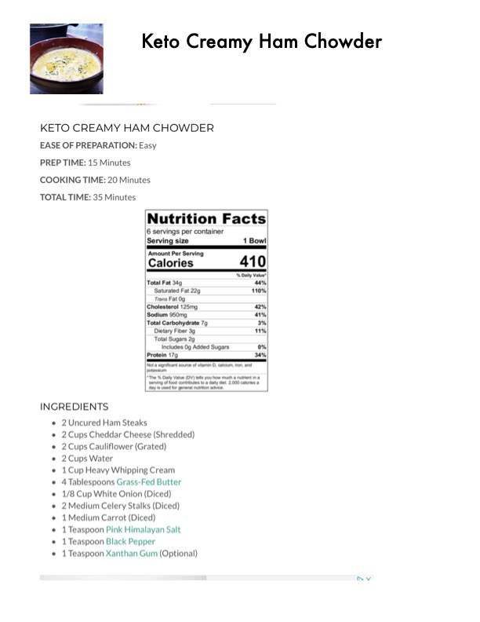

Keto Creamy Ham Chowder

Original cookbook page 25
A creamy, keto-friendly ham chowder that's easy to prepare — perfect for a comforting, low-carb meal.
Prep: 15 minutes • Cook: 20 minutes • Total: 35 minutes
Ingredients
- 2 uncured ham steaks
- 2 cups cheddar cheese (shredded)
- 2 cups cauliflower (grated)
- 2 cups water
- 1 cup heavy whipping cream
- 4 tablespoons grass-fed butter
- 1/8 cup white onion (diced)
- 2 medium celery stalks (diced)
- 1 medium carrot (diced)
- 1 teaspoon pink Himalayan salt
- 1 teaspoon black pepper
- 1 teaspoon xanthan gum (optional)
Instructions
- Instructions not visible on this page - see following page for complete cooking directions
Recipe #25 from collection